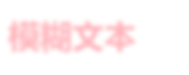

<!DOCTYPE html><html><head><meta charset="utf-8"><title>css高级技巧 | 技术学派</title><meta name="viewport" content="width=device-width,initial-scale=1,maximum-scale=1"><meta name="keywords" content=""><meta name="description" content="HTML与CSS网站开发css高级技巧一平常页面经常看到的一些效果，感觉实现起来很麻烦；其实使用某些技巧会变得容易很多1.实现黑白图像无需ps修改图片，一段代码立即彩色图片显示为黑白图片12345678910.desaturate&amp;#123;                -webkit-filter:grayscale(100%);                   -moz-filter:g"><meta property="og:type" content="article"><meta property="og:title" content="css高级技巧"><meta property="og:url" content="http://www.JiShuXuePai.com/blog/uncategorized/css高级技巧/index.html"><meta property="og:site_name" content="技术学派"><meta property="og:description" content="HTML与CSS网站开发css高级技巧一平常页面经常看到的一些效果，感觉实现起来很麻烦；其实使用某些技巧会变得容易很多1.实现黑白图像无需ps修改图片，一段代码立即彩色图片显示为黑白图片12345678910.desaturate&amp;#123;                -webkit-filter:grayscale(100%);                   -moz-filter:g"><meta property="og:locale" content="zh-CN"><meta property="og:image" content="http://www.jishuxuepai.com/blog/uncategorized/css高级技巧/01.png"><meta property="og:updated_time" content="2018-05-11T09:55:13.000Z"><meta name="twitter:card" content="summary"><meta name="twitter:title" content="css高级技巧"><meta name="twitter:description" content="HTML与CSS网站开发css高级技巧一平常页面经常看到的一些效果，感觉实现起来很麻烦；其实使用某些技巧会变得容易很多1.实现黑白图像无需ps修改图片，一段代码立即彩色图片显示为黑白图片12345678910.desaturate&amp;#123;                -webkit-filter:grayscale(100%);                   -moz-filter:g"><meta name="twitter:image" content="http://www.jishuxuepai.com/blog/uncategorized/css高级技巧/01.png"><link rel="stylesheet" href="/libs/bootstrap/bootstrap-grid.css"><link rel="stylesheet" href="/libs/font-awesome/css/font-awesome.min.css"><link rel="stylesheet" href="/libs/titillium-web/styles.css"><link rel="stylesheet" href="/libs/source-code-pro/styles.css"><link rel="stylesheet" href="/css/style.css"><script src="/libs/jquery/jquery.min.js"></script><link rel="stylesheet" href="/libs/lightgallery/css/lightgallery.min.css"><link rel="stylesheet" href="/libs/justified-gallery/justifiedGallery.min.css"><script>var _hmt=_hmt||[];!function(){var e=document.createElement("script");e.src="//hm.baidu.com/hm.js?4c1bd812de3c30edbaa2b803c66f0a04";var t=document.getElementsByTagName("script")[0];t.parentNode.insertBefore(e,t)}()</script></head></html><body><div id="wrap"><header id="header"><div id="header-outer" class="outer"><div class="container"><div class="container-inner"><div id="header-title"><h1 class="logo-wrap"><a href="/" class="logo"></a></h1></div><div id="header-inner" class="nav-container"><a id="main-nav-toggle" class="nav-icon fa fa-bars">菜单</a><div class="nav-container-inner"><ul id="main-nav"><li class="main-nav-list-item"><a class="main-nav-list-link" href="/">主页</a></li><li class="main-nav-list-item"><a class="main-nav-list-link" href="/edu/index.html">学编程</a></li><li class="main-nav-list-item"><a class="main-nav-list-link" href="/blog/">博客</a></li><li class="main-nav-list-item"><a class="main-nav-list-link" href="/nav.html">网站导航</a></li><li class="main-nav-list-item"><a class="main-nav-list-link" href="/tips.html">学习建议</a></li></ul><nav id="sub-nav"><div id="search-form-wrap"><form class="search-form"><input type="text" class="ins-search-input search-form-input" placeholder="搜索"> <button type="submit" class="search-form-submit"></button></form><div class="ins-search"><div class="ins-search-mask"></div><div class="ins-search-container"><div class="ins-input-wrapper"><input type="text" class="ins-search-input" placeholder="想要查找什么..."> <span class="ins-close ins-selectable"><i class="fa fa-times-circle"></i></span></div><div class="ins-section-wrapper"><div class="ins-section-container"></div></div></div></div><script>window.INSIGHT_CONFIG={TRANSLATION:{POSTS:"文章",PAGES:"页面",CATEGORIES:"分类",TAGS:"标签",UNTITLED:"(未命名)"},ROOT_URL:"/",CONTENT_URL:"/content.json"}</script><script src="/js/insight.js"></script></div></nav></div></div></div></div></div></header><div class="container"><div class="main-body container-inner"><div class="main-body-inner"><section id="main"><div class="main-body-header"><h1 class="header">未分类<div class="author">王平</div></h1></div><div class="main-body-content"><article id="post-css高级技巧" class="article article-single article-type-post" itemscope itemprop="blogPost"><div class="article-inner"><header class="article-header"><h1 class="article-title" itemprop="name">css高级技巧</h1></header><div class="article-meta"><div class="article-date"><a href="/blog/uncategorized/css高级技巧/" class="article-date"><time datetime="2018-05-11T08:14:14.210Z" itemprop="datePublished">2018-05-11</time></a></div></div><div class="article-entry" itemprop="articleBody"><h1 id="HTML与CSS网站开发"><a href="#HTML与CSS网站开发" class="headerlink" title="HTML与CSS网站开发"></a>HTML与CSS网站开发</h1><h1 id="css高级技巧一"><a href="#css高级技巧一" class="headerlink" title="css高级技巧一"></a>css高级技巧一</h1><blockquote><p>平常页面经常看到的一些效果，感觉实现起来很麻烦；其实使用某些技巧会变得容易很多</p></blockquote><h3 id="1-实现黑白图像"><a href="#1-实现黑白图像" class="headerlink" title="1.实现黑白图像"></a>1.实现黑白图像</h3><p>无需ps修改图片，一段代码立即彩色图片显示为黑白图片</p><figure class="highlight"><table><tr><td class="gutter"><pre><span class="line">1</span><br><span class="line">2</span><br><span class="line">3</span><br><span class="line">4</span><br><span class="line">5</span><br><span class="line">6</span><br><span class="line">7</span><br><span class="line">8</span><br><span class="line">9</span><br><span class="line">10</span><br></pre></td><td class="code"><pre><span class="line"><span class="selector-class">.desaturate</span>&#123;</span><br><span class="line">                <span class="attribute">-webkit-filter</span>:<span class="built_in">grayscale</span>(100%);</span><br><span class="line">                   <span class="attribute">-moz-filter</span>:<span class="built_in">grayscale</span>(100%);</span><br><span class="line">                    <span class="attribute">-ms-filter</span>:<span class="built_in">grayscale</span>(100%);</span><br><span class="line">                     <span class="attribute">-o-filter</span>:<span class="built_in">grayscale</span>(100%);</span><br><span class="line">                        <span class="attribute">filter</span>:<span class="built_in">grayscale</span>(100%);</span><br><span class="line">&#125;</span><br><span class="line"></span><br><span class="line">改变前：&lt;img  src="1.jpg"&gt;</span><br><span class="line">改变后：&lt;img  class="desaturate" src="1.jpg"&gt;</span><br></pre></td></tr></table></figure><h3 id="2-菜单上应用-取消最后一个元素样式"><a href="#2-菜单上应用-取消最后一个元素样式" class="headerlink" title="2.菜单上应用/取消最后一个元素样式"></a>2.菜单上应用/取消最后一个元素样式</h3><figure class="highlight html"><table><tr><td class="gutter"><pre><span class="line">1</span><br><span class="line">2</span><br><span class="line">3</span><br><span class="line">4</span><br><span class="line">5</span><br><span class="line">6</span><br><span class="line">7</span><br><span class="line">8</span><br><span class="line">9</span><br><span class="line">10</span><br><span class="line">11</span><br><span class="line">12</span><br><span class="line">13</span><br><span class="line">14</span><br><span class="line">15</span><br><span class="line">16</span><br></pre></td><td class="code"><pre><span class="line"><span class="tag">&lt;<span class="name">style</span> <span class="attr">type</span>=<span class="string">"text/css"</span>&gt;</span><span class="undefined"></span></span><br><span class="line"><span class="undefined">  // 默认写法</span></span><br><span class="line"><span class="css">  <span class="selector-class">.nav</span> <span class="selector-tag">li</span> &#123;<span class="attribute">border-right</span>: <span class="number">1px</span> solid <span class="number">#c00</span>;&#125;</span></span><br><span class="line"><span class="css">  <span class="selector-class">.nav</span> <span class="selector-tag">li</span><span class="selector-pseudo">:last-child</span> &#123;<span class="attribute">border-right</span>: none;&#125;</span></span><br><span class="line"><span class="undefined">  </span></span><br><span class="line"><span class="undefined">  // 直接使用:not()写法</span></span><br><span class="line"><span class="css">  <span class="selector-class">.nav</span> <span class="selector-tag">li</span><span class="selector-pseudo">:not(</span><span class="selector-pseudo">:last-child)</span>&#123;<span class="attribute">border-right</span>: <span class="number">1px</span> solid <span class="number">#c00</span>;&#125;</span></span><br><span class="line"><span class="xml"><span class="tag">&lt;<span class="name">style</span>&gt;</span><span class="undefined"></span></span></span><br><span class="line"><span class="undefined"></span></span><br><span class="line"><span class="xml"><span class="tag">&lt;<span class="name">ul</span> <span class="attr">class</span>=<span class="string">"nav"</span>&gt;</span></span></span><br><span class="line"><span class="xml">   <span class="tag">&lt;<span class="name">li</span>&gt;</span>菜单一<span class="tag">&lt;/<span class="name">li</span>&gt;</span></span></span><br><span class="line"><span class="xml">   <span class="tag">&lt;<span class="name">li</span>&gt;</span>菜单二<span class="tag">&lt;/<span class="name">li</span>&gt;</span> </span></span><br><span class="line"><span class="xml">   <span class="tag">&lt;<span class="name">li</span>&gt;</span>菜单三<span class="tag">&lt;/<span class="name">li</span>&gt;</span></span></span><br><span class="line"><span class="xml">   <span class="tag">&lt;<span class="name">li</span>&gt;</span>菜单四<span class="tag">&lt;/<span class="name">li</span>&gt;</span></span></span><br><span class="line"><span class="xml">   <span class="tag">&lt;<span class="name">li</span>&gt;</span>菜单五<span class="tag">&lt;/<span class="name">li</span>&gt;</span></span></span><br><span class="line"><span class="xml"><span class="tag">&lt;/<span class="name">ul</span>&gt;</span></span></span><br></pre></td></tr></table></figure><h3 id="3-分隔列表"><a href="#3-分隔列表" class="headerlink" title="3.分隔列表"></a>3.分隔列表</h3><figure class="highlight"><table><tr><td class="gutter"><pre><span class="line">1</span><br></pre></td><td class="code"><pre><span class="line">ul &gt; li:not(:last-child)::after &#123;  content: ";";&#125;    //最后一个列表项使用 :not() 伪类,“;”分格列表</span><br></pre></td></tr></table></figure><p>2,3效果同时展示:</p><h3 id="4-text-shadow模糊文本"><a href="#4-text-shadow模糊文本" class="headerlink" title="4.text-shadow模糊文本"></a>4.text-shadow模糊文本</h3><figure class="highlight"><table><tr><td class="gutter"><pre><span class="line">1</span><br><span class="line">2</span><br><span class="line">3</span><br><span class="line">4</span><br><span class="line">5</span><br><span class="line">6</span><br><span class="line">7</span><br><span class="line">8</span><br></pre></td><td class="code"><pre><span class="line">&lt;style type="text/css"&gt;</span><br><span class="line">      <span class="selector-class">.blur</span>&#123;</span><br><span class="line">		  <span class="attribute">color</span>:transparent;</span><br><span class="line">		  <span class="attribute">text-shadow</span>:<span class="number">0</span> <span class="number">0</span> <span class="number">6px</span> <span class="built_in">rgba</span>(255,0,0,.3);</span><br><span class="line">		&#125;</span><br><span class="line">&lt;/style&gt;</span><br><span class="line"></span><br><span class="line">&lt;h1 class="blur"&gt;模糊文本&lt;/h1&gt;</span><br></pre></td></tr></table></figure><p></p><h3 id="5-禁用鼠标事件"><a href="#5-禁用鼠标事件" class="headerlink" title="5.禁用鼠标事件"></a>5.禁用鼠标事件</h3><blockquote><p>CSS3 pointer-events:none的作用可以禁用链接、hover、点击事件</p></blockquote><figure class="highlight"><table><tr><td class="gutter"><pre><span class="line">1</span><br><span class="line">2</span><br><span class="line">3</span><br><span class="line">4</span><br></pre></td><td class="code"><pre><span class="line">//CSS3 新增属性</span><br><span class="line"><span class="selector-class">.disabled</span>&#123; <span class="attribute">pointer-event</span>:none;&#125;</span><br><span class="line"></span><br><span class="line">&lt;a style="pointer-events:none;"&gt;禁用&lt;/a&gt;</span><br></pre></td></tr></table></figure><h3 id="6-文本渐变"><a href="#6-文本渐变" class="headerlink" title="6.文本渐变"></a>6.文本渐变</h3><p>利用Css遮罩（CSS Masks）实现</p><blockquote><p>（CSS Masks）可以实现图片遮罩，只需要给一个图片运用一个-webkit-mask-image的css属性。例如：-webkit-mask-image: url(图片.png);从图片遮罩里读出图片的透明度，白色意味着不透明，黑色意味着透明，介于黑白之间的灰色表示半透明。</p></blockquote><figure class="highlight html"><table><tr><td class="gutter"><pre><span class="line">1</span><br><span class="line">2</span><br><span class="line">3</span><br><span class="line">4</span><br><span class="line">5</span><br><span class="line">6</span><br><span class="line">7</span><br><span class="line">8</span><br><span class="line">9</span><br><span class="line">10</span><br><span class="line">11</span><br><span class="line">12</span><br><span class="line">13</span><br><span class="line">14</span><br><span class="line">15</span><br><span class="line">16</span><br></pre></td><td class="code"><pre><span class="line"><span class="tag">&lt;<span class="name">style</span> <span class="attr">type</span>=<span class="string">"text/css"</span>&gt;</span><span class="undefined"></span></span><br><span class="line"><span class="css">		<span class="selector-tag">h2</span><span class="selector-attr">[data-text]</span> &#123;   </span></span><br><span class="line"><span class="undefined">			position: relative;</span></span><br><span class="line"><span class="undefined">		&#125;</span></span><br><span class="line"><span class="css">		<span class="selector-tag">h2</span><span class="selector-attr">[data-text]</span><span class="selector-pseudo">::after</span> &#123;   </span></span><br><span class="line"><span class="undefined">			content: attr(data-text);   </span></span><br><span class="line"><span class="undefined">			z-index: 10;   </span></span><br><span class="line"><span class="css">			<span class="selector-tag">color</span>: <span class="selector-id">#e3e3e3</span>;   </span></span><br><span class="line"><span class="undefined">			position: absolute;   </span></span><br><span class="line"><span class="undefined">			top: 0;   </span></span><br><span class="line"><span class="undefined">			left: 0;   </span></span><br><span class="line"><span class="undefined">			-webkit-mask-image: -webkit-gradient(linear, left top, left bottom,    	  from(rgba(0,0,0,0)), color-stop(50%, rgba(0,0,0,1)), to(rgba(0,0,0,0)));</span></span><br><span class="line"><span class="undefined">		&#125;</span></span><br><span class="line"><span class="undefined"></span><span class="tag">&lt;/<span class="name">style</span>&gt;</span></span><br><span class="line">	</span><br><span class="line"><span class="tag">&lt;<span class="name">h2</span> <span class="attr">data-text</span>=<span class="string">"文本渐变"</span>&gt;</span>文本渐变<span class="tag">&lt;/<span class="name">h2</span>&gt;</span></span><br></pre></td></tr></table></figure><p></p><h3 id="7-鼠标双击生效"><a href="#7-鼠标双击生效" class="headerlink" title="7.鼠标双击生效"></a>7.鼠标双击生效</h3><figure class="highlight html"><table><tr><td class="gutter"><pre><span class="line">1</span><br><span class="line">2</span><br><span class="line">3</span><br><span class="line">4</span><br><span class="line">5</span><br><span class="line">6</span><br><span class="line">7</span><br><span class="line">8</span><br><span class="line">9</span><br><span class="line">10</span><br><span class="line">11</span><br><span class="line">12</span><br><span class="line">13</span><br><span class="line">14</span><br><span class="line">15</span><br><span class="line">16</span><br><span class="line">17</span><br><span class="line">18</span><br><span class="line">19</span><br><span class="line">20</span><br><span class="line">21</span><br><span class="line">22</span><br><span class="line">23</span><br><span class="line">24</span><br><span class="line">25</span><br><span class="line">26</span><br><span class="line">27</span><br><span class="line">28</span><br><span class="line">29</span><br><span class="line">30</span><br></pre></td><td class="code"><pre><span class="line"><span class="tag">&lt;<span class="name">style</span> <span class="attr">type</span>=<span class="string">"text/css"</span>&gt;</span><span class="undefined"></span></span><br><span class="line"><span class="css">		<span class="selector-class">.test</span> <span class="selector-tag">span</span> &#123;  </span></span><br><span class="line"><span class="undefined">          		position: relative;</span></span><br><span class="line"><span class="undefined">        &#125;</span></span><br><span class="line"><span class="css">		<span class="selector-class">.test</span> <span class="selector-tag">span</span> <span class="selector-tag">a</span> &#123; </span></span><br><span class="line"><span class="undefined">          		position: relative; </span></span><br><span class="line"><span class="undefined">          		z-index: 2;</span></span><br><span class="line"><span class="undefined">        &#125;</span></span><br><span class="line"><span class="css">		<span class="selector-class">.test</span> <span class="selector-tag">span</span> <span class="selector-tag">a</span><span class="selector-pseudo">:hover</span>, <span class="selector-class">.test</span> <span class="selector-tag">span</span> <span class="selector-tag">a</span><span class="selector-pseudo">:active</span> &#123;</span></span><br><span class="line"><span class="undefined">          		z-index: 4;</span></span><br><span class="line"><span class="undefined">        &#125;</span></span><br><span class="line"><span class="css">		<span class="selector-class">.test</span> <span class="selector-tag">span</span> <span class="selector-tag">input</span> &#123;  </span></span><br><span class="line"><span class="undefined">                background: transparent; </span></span><br><span class="line"><span class="undefined">                border: 0;  </span></span><br><span class="line"><span class="undefined">                cursor: pointer; </span></span><br><span class="line"><span class="undefined">                position: absolute;  </span></span><br><span class="line"><span class="undefined">                top: -1px;  </span></span><br><span class="line"><span class="undefined">                left: 0;  </span></span><br><span class="line"><span class="undefined">                width: 100%;    </span></span><br><span class="line"><span class="css">                <span class="selector-tag">height</span><span class="selector-pseudo">:300</span>%;  </span></span><br><span class="line"><span class="undefined">                z-index: 3;</span></span><br><span class="line"><span class="undefined">		&#125;</span></span><br><span class="line"><span class="css">		<span class="selector-class">.test</span> <span class="selector-tag">span</span> <span class="selector-tag">input</span><span class="selector-pseudo">:focus</span> &#123;  </span></span><br><span class="line"><span class="undefined">                background: transparent;  </span></span><br><span class="line"><span class="undefined">                border: 0; </span></span><br><span class="line"><span class="undefined">                z-index: 1;</span></span><br><span class="line"><span class="undefined">		&#125;</span></span><br><span class="line"><span class="undefined"></span></span><br><span class="line"><span class="undefined"></span><span class="tag">&lt;/<span class="name">style</span>&gt;</span></span><br><span class="line"><span class="tag">&lt;<span class="name">div</span> <span class="attr">class</span>=<span class="string">"test"</span>&gt;</span><span class="tag">&lt;<span class="name">span</span>&gt;</span><span class="tag">&lt;<span class="name">input</span> <span class="attr">type</span>=<span class="string">"text"</span> <span class="attr">value</span>=<span class="string">" "</span> <span class="attr">readonly</span>=<span class="string">"true"</span> /&gt;</span><span class="tag">&lt;<span class="name">a</span> <span class="attr">href</span>=<span class="string">"http://baidu.com"</span>&gt;</span>双击<span class="tag">&lt;/<span class="name">a</span>&gt;</span><span class="tag">&lt;/<span class="name">span</span>&gt;</span><span class="tag">&lt;/<span class="name">div</span>&gt;</span></span><br></pre></td></tr></table></figure><h3 id="8-利用属性选择器让空链接显示"><a href="#8-利用属性选择器让空链接显示" class="headerlink" title="8.利用属性选择器让空链接显示"></a>8.利用属性选择器让空链接显示</h3><figure class="highlight html"><table><tr><td class="gutter"><pre><span class="line">1</span><br><span class="line">2</span><br><span class="line">3</span><br><span class="line">4</span><br><span class="line">5</span><br></pre></td><td class="code"><pre><span class="line"><span class="tag">&lt;<span class="name">a</span> <span class="attr">href</span>=<span class="string">"http://edu.hxsd.com"</span>&gt;</span><span class="tag">&lt;/<span class="name">a</span>&gt;</span>  // a没有内容</span><br><span class="line"></span><br><span class="line"><span class="tag">&lt;<span class="name">style</span> <span class="attr">type</span>=<span class="string">"text/css"</span>&gt;</span><span class="undefined"></span></span><br><span class="line"><span class="css">  <span class="selector-tag">a</span><span class="selector-attr">[href^="http"]</span><span class="selector-pseudo">:empty</span><span class="selector-pseudo">::before</span> &#123;  <span class="attribute">content</span>: <span class="built_in">attr</span>(href);&#125;  </span></span><br><span class="line"><span class="undefined"></span><span class="tag">&lt;/<span class="name">style</span>&gt;</span></span><br></pre></td></tr></table></figure><p></p><h3 id="9-继承-box-sizing"><a href="#9-继承-box-sizing" class="headerlink" title="9.继承 box-sizing"></a>9.继承 box-sizing</h3><figure class="highlight css"><table><tr><td class="gutter"><pre><span class="line">1</span><br><span class="line">2</span><br><span class="line">3</span><br><span class="line">4</span><br><span class="line">5</span><br><span class="line">6</span><br></pre></td><td class="code"><pre><span class="line"><span class="selector-tag">html</span> &#123;  </span><br><span class="line">  <span class="attribute">box-sizing</span>: border-box;</span><br><span class="line">&#125;</span><br><span class="line">*, *<span class="selector-pseudo">:before</span>, *<span class="selector-pseudo">:after</span> &#123; </span><br><span class="line">  <span class="attribute">box-sizing</span>: inherit;</span><br><span class="line">&#125;</span><br></pre></td></tr></table></figure><h3 id="10-优化最佳显示文本"><a href="#10-优化最佳显示文本" class="headerlink" title="10.优化最佳显示文本"></a>10.优化最佳显示文本</h3><figure class="highlight css"><table><tr><td class="gutter"><pre><span class="line">1</span><br><span class="line">2</span><br><span class="line">3</span><br><span class="line">4</span><br><span class="line">5</span><br></pre></td><td class="code"><pre><span class="line"><span class="selector-tag">html</span> &#123;  </span><br><span class="line">      <span class="attribute">-moz-osx-font-smoothing</span>: grayscale;  </span><br><span class="line">      <span class="attribute">-webkit-font-smoothing</span>: antialiased;  </span><br><span class="line">      <span class="attribute">text-rendering</span>: optimizeLegibility;</span><br><span class="line">      &#125;</span><br></pre></td></tr></table></figure></div><footer class="article-footer"><a data-url="http://www.JiShuXuePai.com/blog/uncategorized/css高级技巧/" data-id="cjh5uwdrg000buj96aa5hkums" class="article-share-link"><i class="fa fa-share"></i>分享到</a><script>!function(n){n("body").on("click",function(){n(".article-share-box.on").removeClass("on")}).on("click",".article-share-link",function(t){t.stopPropagation();var e,a=n(this),o=a.attr("data-url"),r=encodeURIComponent(o),i="article-share-box-"+a.attr("data-id"),s=a.offset();if(n("#"+i).length){if((e=n("#"+i)).hasClass("on"))return void e.removeClass("on")}else{var l=['<div id="'+i+'" class="article-share-box">','<input class="article-share-input" value="'+o+'">','<div class="article-share-links">','<a href="https://twitter.com/intent/tweet?url='+r+'" class="article-share-twitter" target="_blank" title="Twitter"></a>','<a href="https://www.facebook.com/sharer.php?u='+r+'" class="article-share-facebook" target="_blank" title="Facebook"></a>','<a href="http://pinterest.com/pin/create/button/?url='+r+'" class="article-share-pinterest" target="_blank" title="Pinterest"></a>','<a href="https://plus.google.com/share?url='+r+'" class="article-share-google" target="_blank" title="Google+"></a>',"</div>","</div>"].join("");e=n(l),n("body").append(e)}n(".article-share-box.on").hide(),e.css({top:s.top+25,left:s.left}).addClass("on")}).on("click",".article-share-box",function(t){t.stopPropagation()}).on("click",".article-share-box-input",function(){n(this).select()}).on("click",".article-share-box-link",function(t){t.preventDefault(),t.stopPropagation(),window.open(this.href,"article-share-box-window-"+Date.now(),"width=500,height=450")})}(jQuery)</script></footer></div></article><section id="comments"><div id="gitalk_frame"></div></section></div></section><aside id="sidebar"><a class="sidebar-toggle" title="Expand Sidebar"><i class="toggle icon"></i></a><div class="sidebar-top"><p>关注我 :</p><ul class="social-links"><li><a class="social-tooltip" title="火星时代" href="http://edu.hxsd.com/edunew/topics/webfull/index.html" target="_blank"><i class="icon fa fa-dribbble"></i></a></li><li><a class="social-tooltip" title="weibo" href="#" target="_blank"><i class="icon fa fa-weibo"></i></a></li><li><a class="social-tooltip" title="rss" href="/atom.xml" target="_blank"><i class="icon fa fa-rss"></i></a></li></ul></div><nav id="article-nav"><a href="/blog/html/css高级技巧2/" id="article-nav-newer" class="article-nav-link-wrap"><strong class="article-nav-caption">下一篇</strong><p class="article-nav-title">css高级技巧2</p><i class="icon fa fa-chevron-right" id="icon-chevron-right"></i> </a><a href="/blog/html/cssHack/" id="article-nav-older" class="article-nav-link-wrap"><strong class="article-nav-caption">上一篇</strong><p class="article-nav-title">CSS Hack</p><i class="icon fa fa-chevron-left" id="icon-chevron-left"></i></a></nav><div class="widgets-container"><div class="widget-wrap widget-list"><h3 class="widget-title">分类</h3><div class="widget"><ul class="category-list"><li class="category-list-item"><a class="category-list-link" href="/categories/animate/">animate</a><span class="category-list-count">17</span></li><li class="category-list-item"><a class="category-list-link" href="/categories/git/">git</a><span class="category-list-count">1</span></li><li class="category-list-item"><a class="category-list-link" href="/categories/html/">html</a><span class="category-list-count">2</span></li><li class="category-list-item"><a class="category-list-link" href="/categories/js/">js</a><span class="category-list-count">5</span></li><li class="category-list-item"><a class="category-list-link" href="/categories/php/">php</a><span class="category-list-count">3</span></li><li class="category-list-item"><a class="category-list-link" href="/categories/vue/">vue</a><span class="category-list-count">1</span></li><li class="category-list-item"><a class="category-list-link" href="/categories/学习答疑/">学习答疑</a><span class="category-list-count">4</span></li></ul></div></div><link rel="stylesheet" href="/css/tech/toc.css"><div class="widget-wrap widget-list widget-toc"><h3 class="widget-title">目录</h3><div class="widget"><div class="toc"></div><link rel="stylesheet" href="https://cdnjs.cloudflare.com/ajax/libs/tocbot/3.0.5/tocbot.css"><script src="https://cdnjs.cloudflare.com/ajax/libs/tocbot/3.0.5/tocbot.min.js"></script><script>$(function(){$(".main-body-content").find("h1,h2,h3").each(function(t){$(this).attr("id")||$(this).attr("id","list"+t)}),tocbot.init({tocSelector:".toc",contentSelector:".main-body-content",headingSelector:"h1, h2, h3",collapseDepth:2,positionFixedSelector:".widget-toc",fixedSidebarOffset:595,includeHtml:!1})})</script></div></div><div class="widget-wrap widget-list"><h3 class="widget-title">链接</h3><div class="widget"><ul><li><a href="http://edu.hxsd.com/edunew/topics/webfull/index.html">火星时代</a></li></ul></div></div></div></aside><script>$(function(){$(window).scroll(function(){240<=$(document).scrollTop()?($("#sidebar .sidebar-toggle").addClass("fix"),"block"==$("#sidebar .sidebar-toggle").css("display")&&$(".is-position-fixed").css("top","35px")):$("#sidebar .sidebar-toggle").removeClass("fix")})})</script></div></div></div><footer id="footer"><div class="top"><div class="inner"><div class="list"><dl><dt>关于我们</dt><dd><a href="edu/index.html">公司简介</a></dd><dd><a href="edu/index.html">联系我们</a></dd></dl><dl><dt>校区攻略</dt><dd><a href="edu/index.html">校区环境</a></dd><dd><a href="edu/index.html">住宿攻略</a></dd><dd><a href="edu/index.html">来校路线</a></dd></dl><dl><dt>课程培训</dt><dd><a href="edu/python.html">Web前端</a></dd><dd><a href="edu/python.html">Python</a></dd><dd><a href="edu/python.html">人工智能</a></dd><dd><a href="edu/python.html">大数据</a></dd></dl><dl><dt>常见问答</dt><dd><a href="edu/index.html">学费学时</a></dd><dd><a href="edu/index.html">学习方法</a></dd></dl></div><div class="tel"><tel>176-0025-8815</tel><span>北京市海淀区杏石口路81号火星时代大厦</span></div><div class="weixin"><div class="w1"> <span>官方微信</span></div></div></div></div><div class="bot">Copyright 2018 技术学派 京ICP备15015508号-3</div></footer><link rel="stylesheet" href="https://unpkg.com/gitalk/dist/gitalk.css"><script src="https://unpkg.com/gitalk/dist/gitalk.min.js"></script><script>var gitalk=new Gitalk({clientID:"2fbbb9980b49019d99a7",clientSecret:"152dd10e83ef6595761ea2185304f9ac8263573f",repo:"jsxp",owner:"li-kang",admin:["li-kang"]});gitalk.render("gitalk_frame")</script><script src="/libs/lightgallery/js/lightgallery.min.js"></script><script src="/libs/lightgallery/js/lg-thumbnail.min.js"></script><script src="/libs/lightgallery/js/lg-pager.min.js"></script><script src="/libs/lightgallery/js/lg-autoplay.min.js"></script><script src="/libs/lightgallery/js/lg-fullscreen.min.js"></script><script src="/libs/lightgallery/js/lg-zoom.min.js"></script><script src="/libs/lightgallery/js/lg-hash.min.js"></script><script src="/libs/lightgallery/js/lg-share.min.js"></script><script src="/libs/lightgallery/js/lg-video.min.js"></script><script src="/libs/justified-gallery/jquery.justifiedGallery.min.js"></script><script src="/js/main.js"></script></div></body>